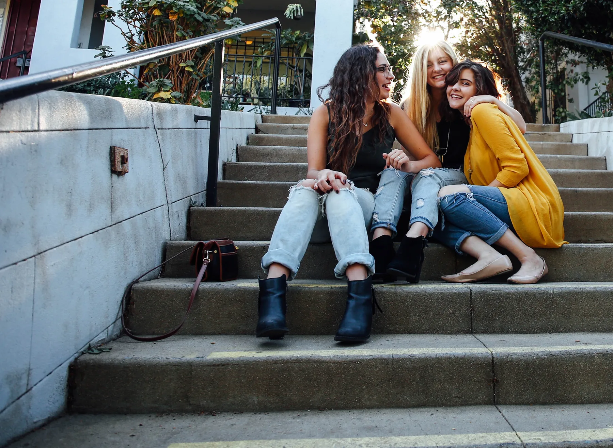
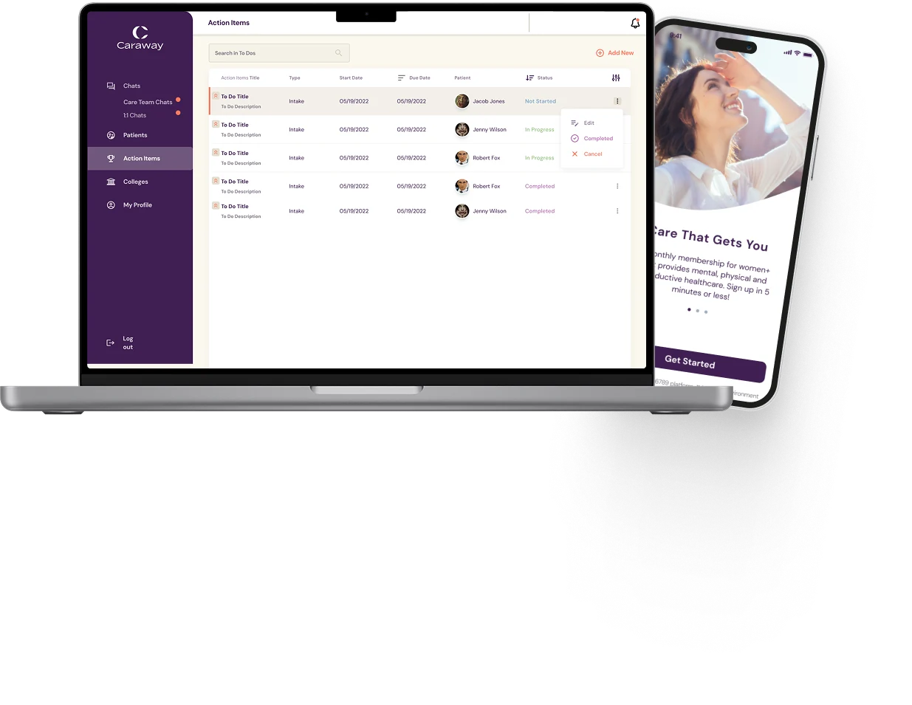
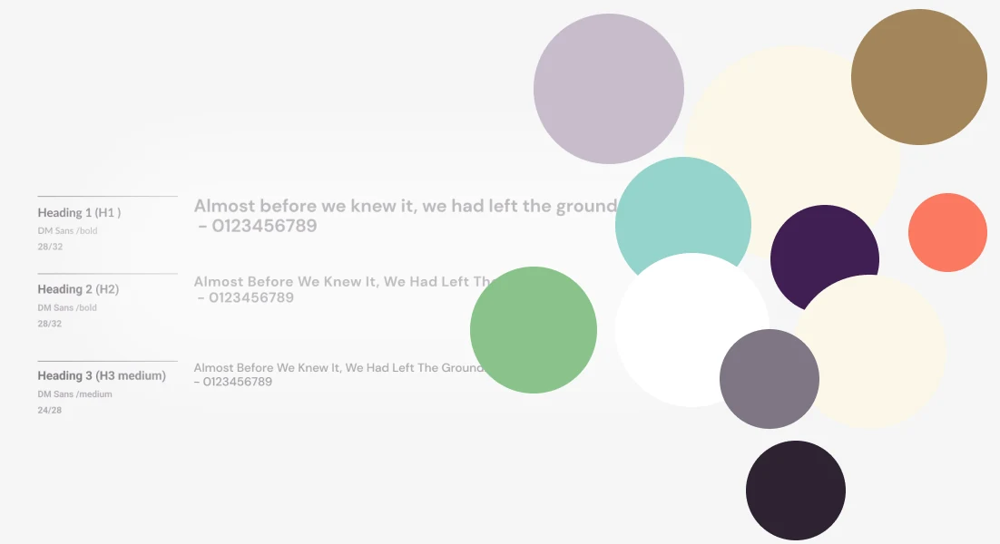
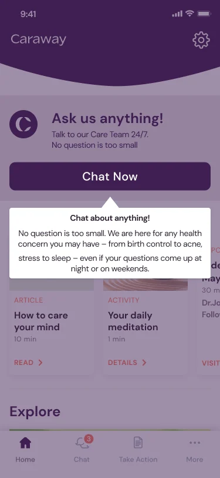
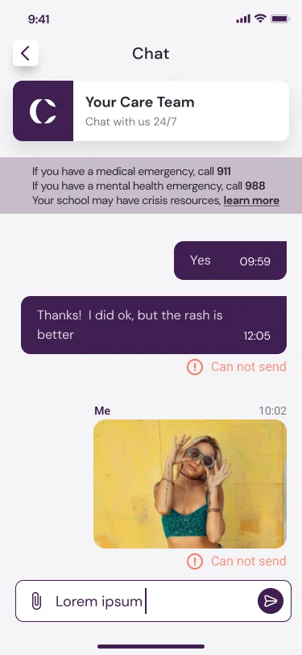
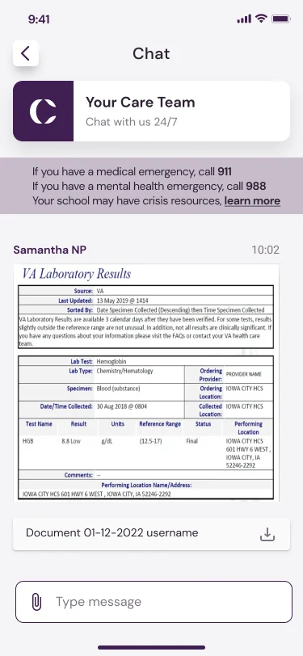
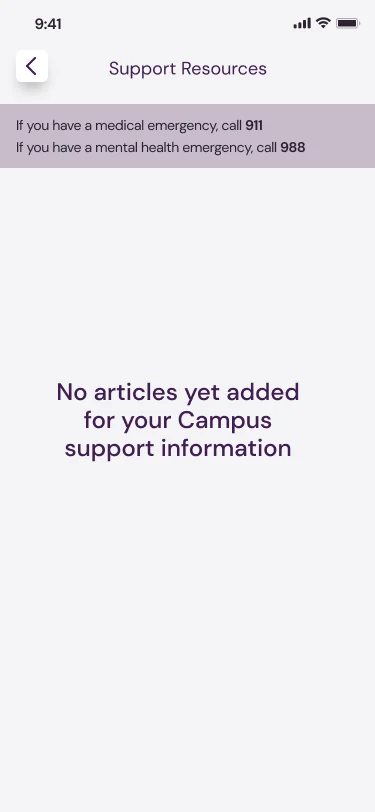

Safety
Help is always one glance away
Every chat keeps 911, 988 and her campus crisis resources pinned above the conversation, so she never has to search for them in a hard moment.
Caraway Health · Product Design Case Study

Healthcare platform for Gen Z
The care you need, all in one place. Students get mental, physical and reproductive health care 24/7 from their phone, doctors and providers support them from a desktop app, and a SaaS admin runs the platform.

Caraway provides mental, physical and reproductive health care for Gen Z, with a focus on women’s health. A member can chat with a therapist, reach a doctor when she is sick, or get birth control advice and prescriptions, 24/7, from her phone.
Doctors, medical practitioners and providers work on the other side, in a desktop app with each member’s information, chat, and tasks set for her needs. A SaaS admin part runs the platform. All three launched.
PROCESS & CONTRIBUTION
Caraway’s mission is to change how Gen Z experiences healthcare: treat what she needs in the moment, and give her the skills to manage her health for life.
A care platform that is
Our primary user has just moved to college. She is away from home and parental care for the first time, adapting to a new place and new friends, and managing her health on her own.
What she needs
Caraway launched in the US, so most of our research was remote: data tables, statistics, reports and a detailed competitor analysis to find where Caraway should sit in the market.
To understand her behaviour, we looked at which devices she uses, how she uses social media and apps, how she likes to communicate, and what her days and years look like.
RESEARCH ACTIVITIES
I created wireframes to check that our thinking matched the partner’s vision. They kept stakeholders on the same page and kept the cost of experimenting low.
The wireframes defined
Once the concept was approved, we designed the screens in Figma. The scope was large and kept changing, so we worked in an agile way and showed stakeholders our progress every week.
Colours, type and brand elements had to stay the same across the student app and the provider desktop app. The app also needed to feel bright and engaging, with light game elements, while staying simple and clearly prioritised.
Why a design system

The student app pairs a friendly look with simple daily tasks that build healthy habits. For doctors, medical practitioners and providers, a desktop app brings each member’s information and conversations into one structured dashboard. A SaaS admin part runs the platform behind both.
STUDENT APP
PROVIDER DESKTOP APP
The scope changed several times and brought many new features and a few rebrands. The design system let every update land smoothly and consistently.
Doctors, nurse practitioners and other clinicians see every member conversation in one place, split into Care Team, My Chats and My Path. A coloured dot shows each chat’s status, a “10+ min” flag marks members who have waited too long, and a clinician can join a channel to take over.
These screens show one of the rebrands. In about 14 months the product was rebranded twice, because the product owner wanted it to stay fresh and follow current trends: the original purple gave way to this navy and coral look. The shared design system meant each rebrand changed the styles, not the screens.
The student app alone grew to around 240 screens across more than 20 flows, from sign-up and chat to video visits, medical history, insurance and crisis support. Three details show how the product looked after her.




Safety
Every chat keeps 911, 988 and her campus crisis resources pinned above the conversation, so she never has to search for them in a hard moment.
Waiting
She sees who joined her chat and the expected response time. Clinicians see a “10+ min” flag on anyone who has waited too long.
Care rules
The clinician confirms her state before starting. Providers search members by name, date of birth and state, and their profiles hold state and licence records.
DESIGN OUTCOME
A student app of around 240 screens, a provider desktop app and a SaaS admin, all launched and all built on one design system that kept the platform consistent as the scope grew.
LAUNCHED
The student app, the provider desktop app and the SaaS admin all launched.
RESILIENT
New features and two rebrands in 14 months rolled out smoothly on the same system.
CONNECTED
Every part of the platform shares colours, type and components.
UX research · Competitor analysis · Wireframing · Design systems · Healthcare UX · Mobile & web design · Stakeholder collaboration
NEXT PROJECT